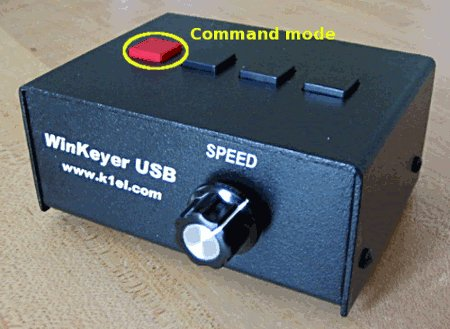

Before any attempt to set up your WinKey, carefully read
the manual supplied on the accompanying CD (can also be downloaded from the K1EL's site
http://www.k1el.com
WinKey has three modes - a
host mode (the keyer is connected and fully controlled
by the computer), a
standalone mode (operated without any computer connection,
the speed pot and message buttons are fully functional) and a
command mode
(a setup mode, commands can be entered via the paddle or dedicated
program on the computer). Because a full featured setup in CQRLOG would
probably be overkill, a very basic setup should be performed via
paddle using the command mode.

Press the red message button and hold it for approx. 2 seconds. The
keyer will play an 'R' (in Morse) if everything is OK or 6 dits if the
previous communication was not successful. In this case, press the red
button again until you hear the 'R'. Now you can enter your commands.
The '
P' command is not listed in the user
manual, however it is a very important command. I recommend you save your
setup in standalone mode using the '
P' command, also put a set of batteries
into the keyer (don't rely on the USB port).
If you don't feel very comfortable with the timing, try the '
J'
command to set up the 'paddle sensitivity'.
The setup you will need is mostly the following:
- Select the output port (1 or 2) using the command 'O'. Your Winkey confirms the port number
with E (a single dot = port 1) or I (two dots = port 2). This setting is relevant to both paddle and
keyboard operation.
- Choose the keyer mode (Curtis A or B, Ultimatic, Bug) with the command
'K'. Relevant only to paddle operation.
- Set up the weighting with the command 'W'. The default
value is 50 which means that the pause has the same length as the dot. If you prefer
speeds above 30 WPM, try 'lighter' settings with pauses longer than dots (weighting
lower than 50). At slow speeds (below 20 WPM) a heavier settings may be an advantage
(above 50). The IARU operating manual by ON4UN and ON4WW is incorrect here, it lists
the weighting preferences backwards! Remember, that a pause carries a lot of information!
The proper setting is also affected by the keying properties of your radio. This setting
is relevant to both paddle and keyboard operation.
- Set up the keyer compensation (command 'V') - this setting is
dictated by your keying system. It is relevant only if you are using a PTT line controlled
by the Winkey. It should prevent the hot switching of any relay in the T/R system.
Be careful, improper settings may cause serious damage of your equipment.
This setting is relevant to both paddle and keyboard operation.
- Set up the Paddle Break mode (command 'B') - it should always be on.
OFF means that you will be unable to break continuous sending with the paddle.
In host mode (when connected to the computer), the speed pot is inactive.
You
can only change the speed with the PgUp/PgDn keys!